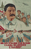
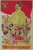

Page index / courses
1950-1960
The death of Stalin in 1953 set off a struggle for power in the Soviet Union and led to unrest in Eastern Europe
A personal account of the reaction to Stalin's death


By 1956, Nikita Khruschev had ascended to the post of secretary of the communist party, and was in control of Soviet politics.